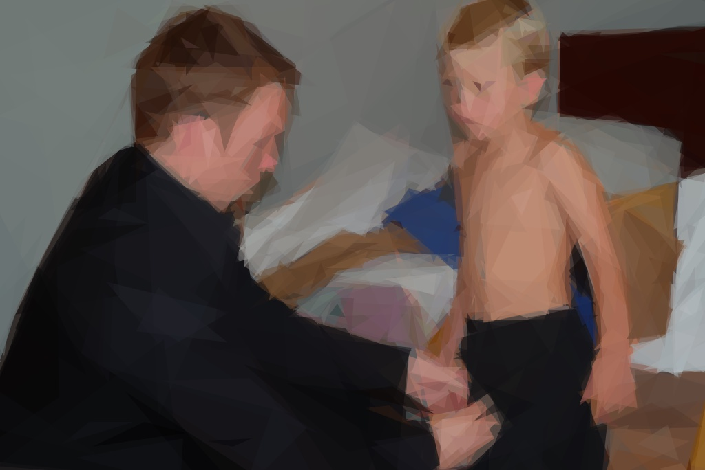
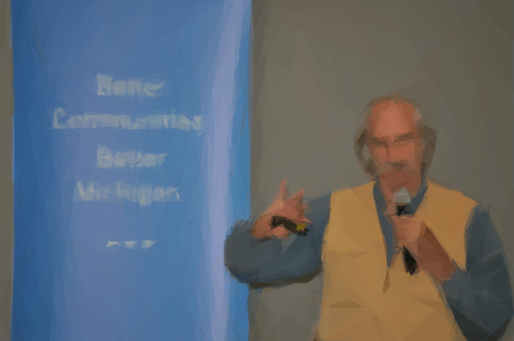
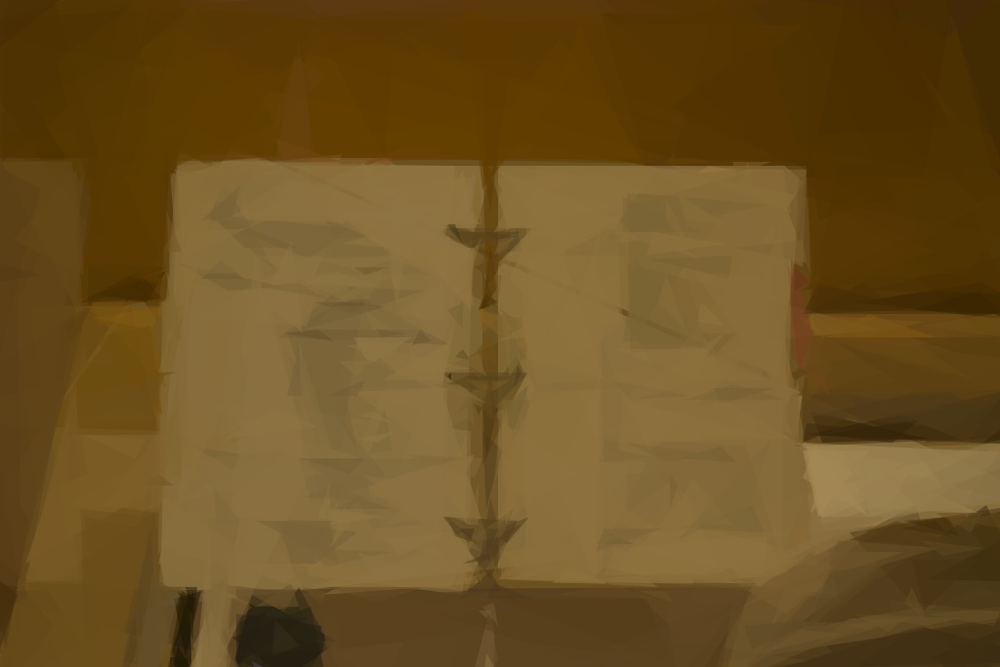
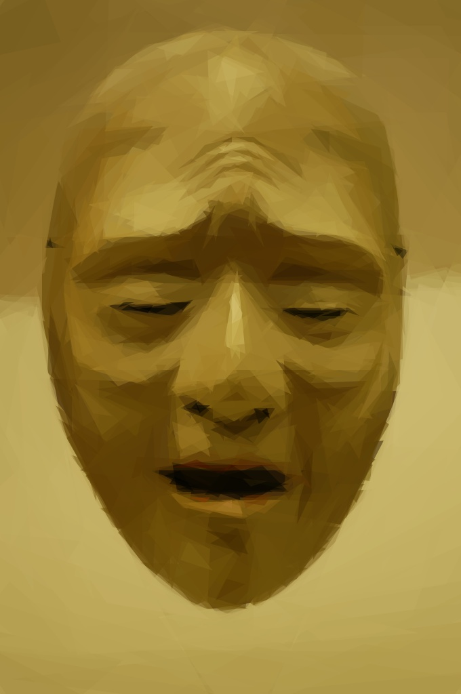
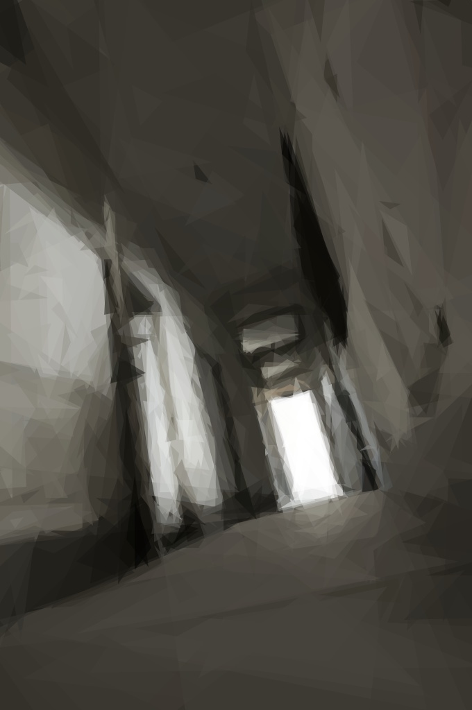

To Sherlock Holmes she is always the woman. I have seldom heard him mention her under any other name. In his eyes she eclipses and predominates the whole of her sex. It was not that he felt any emotion akin to love for Irene Adler. All emotions, and that one particularly, were abhorrent to his cold, precise but admirably balanced mind. He was, I take it, the most perfect reasoning and observing machine that the world has seen, but as a lover he would have placed himself in a false position. He never spoke of the softer passions, save with a gibe and a sneer. They were admirable things for the observer—excellent for drawing the veil from men’s motives and actions. But for the trained reasoner to admit such intrusions into his own delicate and finely adjusted temperament was to introduce a distracting factor which might throw a doubt upon all his mental results. Grit in a sensitive instrument, or a crack in one of his own high-power lenses, would not be more disturbing than a strong emotion in a nature such as his. And yet there was but one woman to him, and that woman was the late Irene Adler, of dubious and questionable memory.
I had seen little of Holmes lately. My marriage had drifted us away from each other. My own complete happiness, and the home-centred interests which rise up around the man who first finds himself master of his own establishment, were sufficient to absorb all my attention, while Holmes, who loathed every form of society with his whole Bohemian soul, remained in our lodgings in Baker Street, buried among his old books, and alternating from week to week between cocaine and ambition, the drowsiness of the drug, and the fierce energy of his own keen nature. He was still, as ever, deeply attracted by the study of crime, and occupied his immense faculties and extraordinary powers of observation in following out those clues, and clearing up those mysteries which had been abandoned as hopeless by the official police. From time to time I heard some vague account of his doings: of his summons to Odessa in the case of the Trepoff murder, of his clearing up of the singular tragedy of the Atkinson brothers at Trincomalee, and finally of the mission which he had accomplished so delicately and successfully for the reigning family of Holland. Beyond these signs of his activity, however, which I merely shared with all the readers of the daily press, I knew little of my former friend and companion.
One night—it was on the twentieth of March, 1888—I was returning from a journey to a patient (for I had now returned to civil practice), when my way led me through Baker Street. As I passed the well-remembered door, which must always be associated in my mind with my wooing, and with the dark incidents of the Study in Scarlet, I was seized with a keen desire to see Holmes again, and to know how he was employing his extraordinary powers. His rooms were brilliantly lit, and, even as I looked up, I saw his tall, spare figure pass twice in a dark silhouette against the blind. He was pacing the room swiftly, eagerly, with his head sunk upon his chest and his hands clasped behind him. To me, who knew his every mood and habit, his attitude and manner told their own story. He was at work again. He had risen out of his drug-created dreams and was hot upon the scent of some new problem. I rang the bell and was shown up to the chamber which had formerly been in part my own.
His manner was not effusive. It seldom was; but he was glad, I think, to see me. With hardly a word spoken, but with a kindly eye, he waved me to an armchair, threw across his case of cigars, and indicated a spirit case and a gasogene in the corner. Then he stood before the fire and looked me over in his singular introspective fashion.
“Wedlock suits you,” he remarked. “I think, Watson, that you have put on seven and a half pounds since I saw you.”
“Seven!” I answered.
“Indeed, I should have thought a little more. Just a trifle more, I fancy, Watson. And in practice again, I observe. You did not tell me that you intended to go into harness.”
“Then, how do you know?”
“I see it, I deduce it. How do I know that you have been getting yourself very wet lately, and that you have a most clumsy and careless servant girl?”
“My dear Holmes,” said I, “this is too much. You would certainly have been burned, had you lived a few centuries ago. It is true that I had a country walk on Thursday and came home in a dreadful mess, but as I have changed my clothes I can’t imagine how you deduce it. As to Mary Jane, she is incorrigible, and my wife has given her notice, but there, again, I fail to see how you work it out.”
He chuckled to himself and rubbed his long, nervous hands together.
“It is simplicity itself,” said he; “my eyes tell me that on the inside of your left shoe, just where the firelight strikes it, the leather is scored by six almost parallel cuts. Obviously they have been caused by someone who has very carelessly scraped round the edges of the sole in order to remove crusted mud from it. Hence, you see, my double deduction that you had been out in vile weather, and that you had a particularly malignant boot-slitting specimen of the London slavey. As to your practice, if a gentleman walks into my rooms smelling of iodoform, with a black mark of nitrate of silver upon his right forefinger, and a bulge on the right side of his top-hat to show where he has secreted his stethoscope, I must be dull, indeed, if I do not pronounce him to be an active member of the medical profession.”
I could not help laughing at the ease with which he explained his process of deduction. “When I hear you give your reasons,” I remarked, “the thing always appears to me to be so ridiculously simple that I could easily do it myself, though at each successive instance of your reasoning I am baffled until you explain your process. And yet I believe that my eyes are as good as yours.”
“Quite so,” he answered, lighting a cigarette, and throwing himself down into an armchair. “You see, but you do not observe. The distinction is clear. For example, you have frequently seen the steps which lead up from the hall to this room.”
“Frequently.”
“How often?”
“Well, some hundreds of times.”
“Then how many are there?”
“How many? I don’t know.”
“Quite so! You have not observed. And yet you have seen. That is just my point. Now, I know that there are seventeen steps, because I have both seen and observed. By the way, since you are interested in these little problems, and since you are good enough to chronicle one or two of my trifling experiences, you may be interested in this.” He threw over a sheet of thick, pink-tinted notepaper which had been lying open upon the table. “It came by the last post,” said he. “Read it aloud.”
The note was undated, and without either signature or address.
“There will call upon you to-night, at a quarter to eight o’clock,” it said, “a gentleman who desires to consult you upon a matter of the very deepest moment. Your recent services to one of the royal houses of Europe have shown that you are one who may safely be trusted with matters which are of an importance which can hardly be exaggerated. This account of you we have from all quarters received. Be in your chamber then at that hour, and do not take it amiss if your visitor wear a mask.”
“This is indeed a mystery,” I remarked. “What do you imagine that it means?”
“I have no data yet. It is a capital mistake to theorise before one has data. Insensibly one begins to twist facts to suit theories, instead of theories to suit facts. But the note itself. What do you deduce from it?”
I carefully examined the writing, and the paper upon which it was written.
“The man who wrote it was presumably well to do,” I remarked, endeavouring to imitate my companion’s processes. “Such paper could not be bought under half a crown a packet. It is peculiarly strong and stiff.”
“Peculiar—that is the very word,” said Holmes. “It is not an English paper at all. Hold it up to the light.”
I did so, and saw a large “E” with a small “g,” a “P,” and a large “G” with a small “t” woven into the texture of the paper.
“What do you make of that?” asked Holmes.
“The name of the maker, no doubt; or his monogram, rather.”
“Not at all. The ‘G’ with the small ‘t’ stands for ‘Gesellschaft,’ which is the German for ‘Company.’ It is a customary contraction like our ‘Co.’ ‘P,’ of course, stands for ‘Papier.’ Now for the ‘Eg.’ Let us glance at our Continental Gazetteer.” He took down a heavy brown volume from his shelves. “Eglow, Eglonitz—here we are, Egria. It is in a German-speaking country—in Bohemia, not far from Carlsbad. ‘Remarkable as being the scene of the death of Wallenstein, and for its numerous glass-factories and paper-mills.’ Ha, ha, my boy, what do you make of that?” His eyes sparkled, and he sent up a great blue triumphant cloud from his cigarette.
“The paper was made in Bohemia,” I said.
“Precisely. And the man who wrote the note is a German. Do you note the peculiar construction of the sentence—‘This account of you we have from all quarters received.’ A Frenchman or Russian could not have written that. It is the German who is so uncourteous to his verbs. It only remains, therefore, to discover what is wanted by this German who writes upon Bohemian paper and prefers wearing a mask to showing his face. And here he comes, if I am not mistaken, to resolve all our doubts.”
As he spoke there was the sharp sound of horses’ hoofs and grating wheels against the curb, followed by a sharp pull at the bell. Holmes whistled.
“A pair, by the sound,” said he. “Yes,” he continued, glancing out of the window. “A nice little brougham and a pair of beauties. A hundred and fifty guineas apiece. There’s money in this case, Watson, if there is nothing else.”
“I think that I had better go, Holmes.”
“Not a bit, Doctor. Stay where you are. I am lost without my Boswell. And this promises to be interesting. It would be a pity to miss it.”
“But your client—”
“Never mind him. I may want your help, and so may he. Here he comes. Sit down in that armchair, Doctor, and give us your best attention.”
A slow and heavy step, which had been heard upon the stairs and in the passage, paused immediately outside the door. Then there was a loud and authoritative tap.
“Come in!” said Holmes.